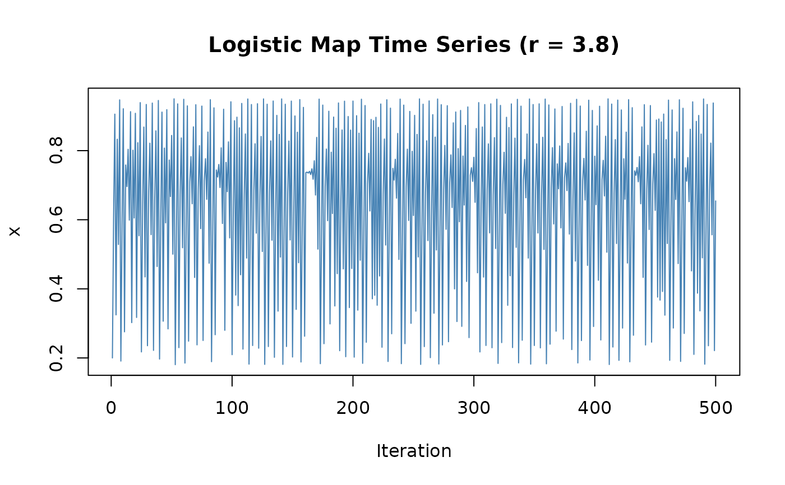
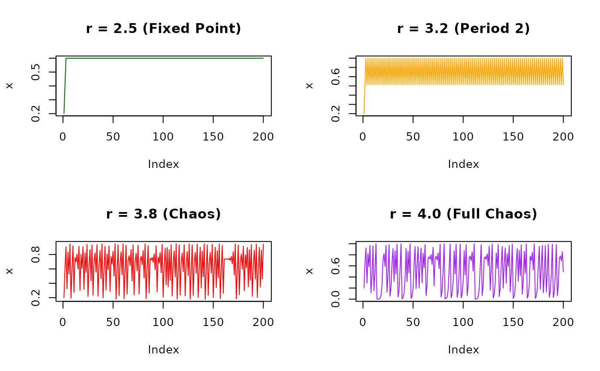
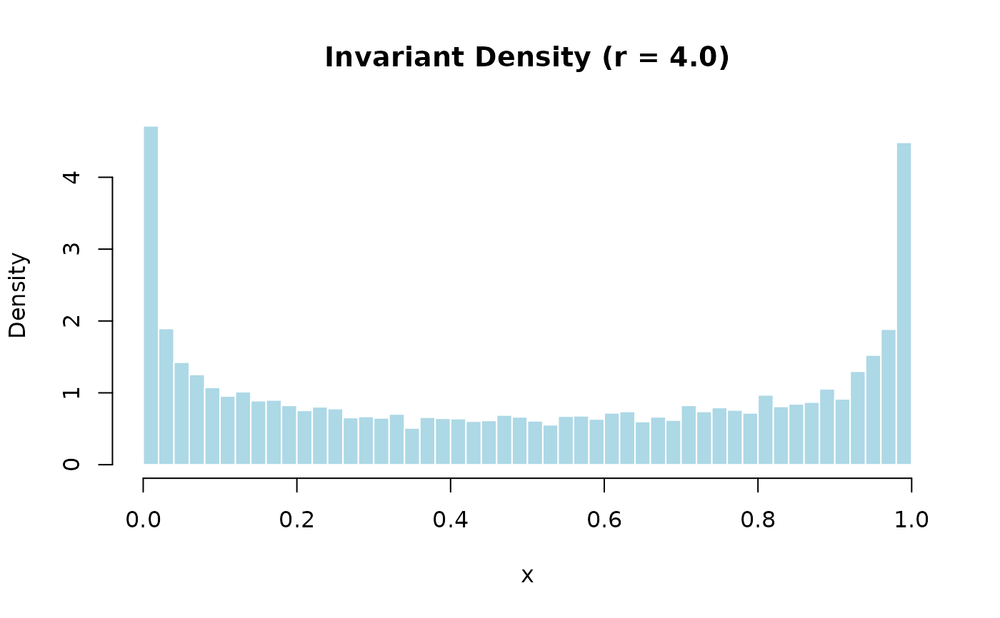
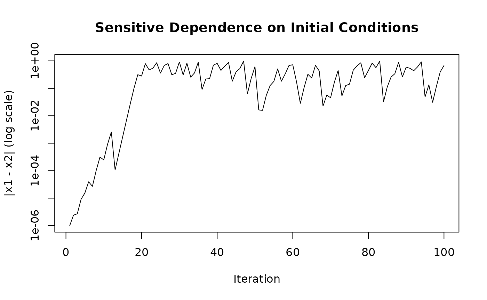

Generates a time series from the logistic map, a classic one-dimensional chaotic dynamical system. The logistic map exhibits complex behavior including fixed points, periodic orbits, and deterministic chaos depending on the parameter r.
Arguments
- n
Integer. Number of iterations to simulate. Must be positive. Typical values range from 500 (quick exploration) to 10000 (statistical analysis). Larger n provides better estimates of long-term statistics but takes longer to compute.
- r
Numeric. The logistic map parameter. Valid range is [0, 4], though values outside [2.5, 4] are rarely used. Recommended values: - r = 3.8 for robust chaotic dynamics - r = 4.0 for fully chaotic behavior with known invariant density - r = 3.2 for periodic behavior (educational comparison)
- x0
Numeric. Initial condition. Must be in the open interval (0, 1). The dynamics are typically not sensitive to x0 for chaotic parameter values (after a short transient), but periodic regimes may have multiple attractors. Default is 0.2.
- noise_sd
Numeric (\(\ge 0\)). Standard deviation of additive Gaussian noise applied after each iteration. Defaults to 0 (deterministic). When positive, an iid N(0, noise_sd) shock is added to the iterate; this can push the orbit outside the canonical invariant set, which is the intended behaviour for studying noisy chaotic systems.
Value
Numeric vector of length n containing the simulated time series. All values are typically in (0, 1) for standard parameter values. The first element equals x0. For r = 4, the invariant density is beta(0.5, 0.5), resulting in a characteristic U-shaped histogram.
Details
## Overview The logistic map is defined by the iteration: $$x_{n+1} = r \cdot x_n \cdot (1 - x_n)$$
Despite its simplicity, this map demonstrates the route to chaos through period-doubling bifurcations and is fundamental to understanding chaotic dynamics.
## Parameter Regions The parameter r controls the system's behavior: - **r < 1**: Extinction (x → 0) - **1 < r < 3**: Convergence to fixed point - **3 < r < 1 + √6 ≈ 3.45**: Oscillation between two values - **3.45 < r < 3.57**: Period-doubling cascade - **r > 3.57**: Chaotic regime (with periodic windows) - **r = 4**: Fully chaotic (every orbit is dense)
For studying extreme value theory, r = 3.8 or r = 4.0 are common choices as they produce robust chaotic dynamics.
Mathematical Background
The logistic map was introduced by Robert May (1976) as a model for population dynamics. The equation represents population growth with reproduction (r·x) and competition/limiting resources (1-x).
For r > 3.57, the system exhibits sensitive dependence on initial conditions, a hallmark of chaos. The largest Lyapunov exponent is positive in the chaotic regime, confirming exponential divergence of nearby trajectories.
References
May, R. M. (1976). Simple mathematical models with very complicated dynamics. *Nature*, 261(5560), 459-467. doi:10.1038/261459a0
Strogatz, S. H. (2015). *Nonlinear Dynamics and Chaos: With Applications to Physics, Biology, Chemistry, and Engineering* (2nd ed.). Westview Press.
See also
logistic_bifurcation to explore the bifurcation diagram across
parameter values, simulate_henon_map for a 2D chaotic system,
estimate_lyapunov_exponent to quantify chaotic behavior.
For using this in extreme value analysis, see
vignette("estimating-theta-logistic").
Other simulation functions:
simulate_duffing(),
simulate_ikeda_map(),
simulate_lorenz(),
simulate_mackey_glass(),
simulate_rossler(),
simulate_standard_map()
Examples
# Basic usage: Generate 500 iterations in chaotic regime
series <- simulate_logistic_map(n = 500, r = 3.8, x0 = 0.2)
head(series)
#> [1] 0.2000000 0.6080000 0.9056768 0.3246201 0.8331191 0.5283202
# Visualize the chaotic time series
plot(series, type = "l", col = "steelblue",
main = "Logistic Map Time Series (r = 3.8)",
xlab = "Iteration", ylab = "x")

# Compare different dynamical regimes
par(mfrow = c(2, 2))
plot(simulate_logistic_map(200, r = 2.5, x0 = 0.2), type = "l",
main = "r = 2.5 (Fixed Point)", ylab = "x", col = "darkgreen")
plot(simulate_logistic_map(200, r = 3.2, x0 = 0.2), type = "l",
main = "r = 3.2 (Period 2)", ylab = "x", col = "orange")
plot(simulate_logistic_map(200, r = 3.8, x0 = 0.2), type = "l",
main = "r = 3.8 (Chaos)", ylab = "x", col = "red")
plot(simulate_logistic_map(200, r = 4.0, x0 = 0.2), type = "l",
main = "r = 4.0 (Full Chaos)", ylab = "x", col = "purple")

par(mfrow = c(1, 1))
# Examine the invariant distribution for r = 4
long_series <- simulate_logistic_map(n = 10000, r = 4.0, x0 = 0.2)
hist(long_series, breaks = 50, probability = TRUE,
main = "Invariant Density (r = 4.0)",
xlab = "x", col = "lightblue", border = "white")

# Note the U-shape characteristic of beta(0.5, 0.5)
# Sensitivity to initial conditions (chaos demonstration)
x1 <- simulate_logistic_map(100, r = 4.0, x0 = 0.2)
x2 <- simulate_logistic_map(100, r = 4.0, x0 = 0.200001)
plot(abs(x1 - x2), type = "l", log = "y",
main = "Sensitive Dependence on Initial Conditions",
xlab = "Iteration", ylab = "|x1 - x2| (log scale)")

# Trajectories diverge exponentially despite nearly identical start
# \donttest{
# Generate very long series for statistical analysis
statistical_sample <- simulate_logistic_map(n = 100000, r = 3.8, x0 = 0.2)
# Estimate extremal index
threshold <- quantile(statistical_sample, 0.95)
theta <- extremal_index_runs(statistical_sample, threshold, run_length = 2)
print(theta)
#> [1] 1
# }